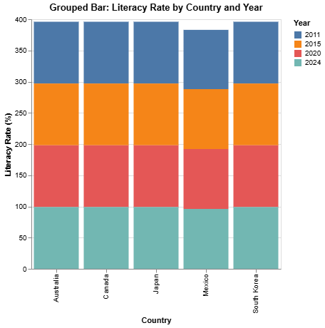
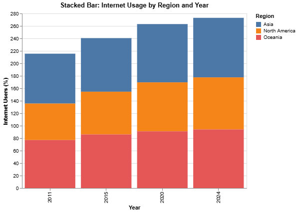

Grouped Bar: Literacy Rate
This chart compares literacy rates of countries across years. Each bar represents a year and shows how literacy stays high with small changes.
Stacked Bar: Internet Usage by Region
The stacked bar chart shows internet user percentages for each region over time. The colored sections show how regions contribute to total internet adoption.